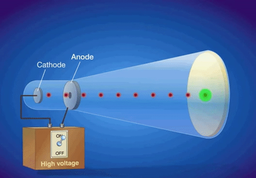

Atoms and Early Atomic Theories and the Origins of Quantum Theory
Callout
Early Developments in Atomic Structure

Thomson’s Experiment
Based on his experiments, Thomson was able to determine the charge-to-mass ratio of an electron, using the formula:
.png)
where e represents the charge on an electron in Coulombs and m represents the electron mass in grams.
In 1909, scientist Robert Millikan conducted experiments in which he used charged oil drops to determine the charge of an electron. Using the apparatus, Millikan discovered that the fall of charged oil droplets due to gravity could be halted by adjusting the voltage across two charged plates. He was able to calculate the charge on the oil drop from the voltage and the mass of the oil drop. Millikan was able to calculate the mass of an electron from the discovery of Thomson.
.png)
Callout
Henri Becquerel found that in the absence of light, a piece of mineral containing uranium produces an image on a photographic plate. He attributed this to uranium atoms spontaneously emitting radiation: energy, particles, or waves that travel through space or substances. Elements that emit radiation are said to be radioactive.
Radioactivity is the spontaneous decay of the nucleus of an atom.
.png)
Rutherford’s Model of the Atom
Rutherford devised experiments in which positively charged alpha particles were fired at a thin sheet of gold foil. Although most of the alpha particles passed straight through the gold foil, some were deflected at various angles while others were reflected toward the source, never reaching the detector.
.gif)
Callout
Through his experiment of the bombardment of alpha particles in a thin foil:
- He explained that the deflection of alpha particles was caused by a concentrated positive charge at the center of the atom.
- He also predicted that the positive charge at the center of the atom must contain most of the atomic mass, which would account for the deflection of massive alpha particles.
- He also reasoned that since most of the alpha particles passed directly through the foil, the atom must be made up of mostly empty space, and the positive center must be small in volume. relative to the atom.
Atoms and Isotopes
The nucleus of an atom contains protons, which have a positive charge equal in magnitude to the negative charge of an electron, and neutrons, which have virtually the same mass as a proton but no charge.
.png)